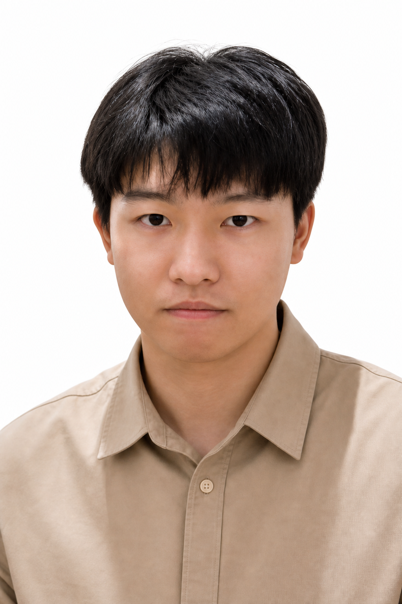
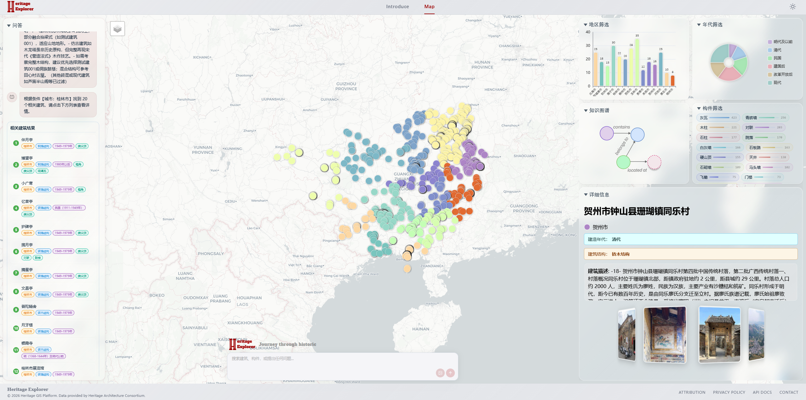

把地图
变成会思考的故事。I make maps
into thinking stories.
我是王钰淞，HKUST(GZ) 计算媒体与艺术 MPhil。把 GIS、知识图谱、多模态 RAG 和文化遗产数据，做成真正能被人使用的东西。I’m Yusong Wang, an HKUST(GZ) CMA MPhil. I turn GIS, knowledge graphs, multimodal RAG, and heritage data into things people can actually use.

王钰淞 / YUSONG
GIS × 多模态 AI
研究 / 工程 / 遗产计算GIS × Multimodal AI
research / engineering / heritage
前中科院上海微系统所嵌入式工程师。现在把地图、图谱和模型接起来。Former embedded engineer at CAS SIMIT. Now connecting maps, graphs, and models.
> mode: making
> output: useful
不是把 AI 塞进页面。
是让数据开始说话。Don’t put AI on a page.
Make data speak.
我关心的是完整链路：从一个地点、一栋建筑或一张图，到可追溯的回答和下一步行动。I care about the whole chain: from a place, building, or image to an answer you can trace and an action you can take.
地图不是背景，它是问题的入口。A map is not a backdrop. It is the entry point.
每个回答都应该回到证据。Every answer should return to evidence.
把复杂系统做得能被看懂。Make complex systems legible.
技术最后要服务真实的人。Technology should serve real people.
HeritageExplorer
广西历史建筑多模态 GIS 平台。地图即入口，图谱即大脑，对话即指针。A multimodal GIS platform for Guangxi heritage. Map as entry, graph as brain, dialogue as pointer.

研究、原型和一些
不能放进简历的东西。Research, prototypes,
and things outside a CV.
从系统架构到视觉叙事，我喜欢把同一个问题换几种方式重新做一遍。From system architecture to visual narrative, I like rebuilding the same question in different forms.
从 PCB 到 Prompt。From PCB to Prompt.
工程训练让我相信，漂亮的界面背后也应该有扎实的系统。Engineering taught me that a beautiful interface should still have a sturdy system underneath.
广西大学Guangxi University
电气工程本科。智慧农业与光伏运维项目。B.Eng. Smart agriculture and PV O&M projects.
中科院上海微系统所CAS SIMIT
嵌入式工程师。LoRa、消防感知与现场部署。Embedded engineer. LoRa, fire safety, and field deployment.
HKUST(GZ)HKUST(GZ)
计算媒体与艺术 MPhil。开始做 HeritageExplorer。CMA MPhil. Started building HeritageExplorer.
下一站What’s next
多模态 Agent、遗产叙事、可解释 RAG。寻找全职机会。Multimodal agents, heritage storytelling, explainable RAG. Open to full-time roles.
工具不应该
抢走问题。Tools should not
steal the question.
我在意工具之间的连接，而不是工具本身的名单。I care about the connections between tools, not the list of tools itself.
MULTIMODAL AI
把文字、图像和空间线索放到一个检索回路。Text, images, and spatial clues in one retrieval loop.
GIS / VISUAL
地图是最自然的复杂信息入口。A map is the most natural entry to complex information.
GRAPH / RETRIEVAL
让关系可查询，让证据可回溯。Make relationships queryable and evidence traceable.
WEB / DEPLOY
从一个 demo 走到别人真的能打开的产品。From a demo to a product someone can actually open.
EMBEDDED
硬件、固件、信号和现场约束。Hardware, firmware, signals, and field constraints.
DESIGN / 3D
让系统有一个别人愿意靠近的表面。Give the system a surface people want to approach.